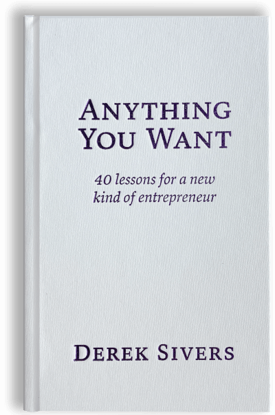

Library › Business & Startups
Anything You Want — Summary & Key Lessons

40 lessons for a new kind of entrepreneur — from the man who built CD Baby by accident and gave away $22 million.
📖 OPEN THE FULL INTERACTIVE BREAKDOWN →🌐 Read it in Hindi, Hinglish, Gujarati, Tamil & 22 more languages — free, with audio.
💡 The Big Idea
Sivers never meant to start a business: he was a musician who built a way to sell his own CD online in 1998, friends asked to use it, and CD Baby grew into the largest independent-music retailer — which he later sold for $22M and gave to charity. The book is his anti-manual: your business plan should serve YOUR ideal life, not investors' growth fantasies (he refused all funding and 'no' was his default); perfection isn't when there's nothing to add but nothing to remove; make your customers dream-come-true happy and ignore everyone else; ideas are multipliers of execution, worth nothing alone; delegate or die — but don't abdicate; and the whole game is optional: a business is a playground you invent, so make the rules ones you actually want to live under.
🧠 The 4 Key Lessons
Lesson 1: Business Is a Playground You Design
Lessons: Your Business Is Your Utopia / What's Your Compass?
Sivers' founding heresy: a business is your chance to build a little universe with YOUR rules — 'your utopia' — so every convention (grow fast, raise money, maximize revenue, exit big) is optional, and adopting it unexamined means living in someone else's utopia. His compass: does this decision make my LIFE better and my CUSTOMERS happier? Everything else — press, prestige, scale, investor enthusiasm — is noise. CD Baby's 'business plan' was one sentence and its policies were designed around delight, not extraction (paid weekly when the industry paid quarterly; no exclusivity when the industry demanded it). The proof of the philosophy: when he eventually got what founders supposedly dream of (acquisition offers, VC interest), he kept refusing — because the point was never the exit; it was the daily life the business created. Success that costs your utopia isn't success; it's a well-paid mistake.
📖 Example: The founding accident is the exhibit: Sivers built a 'buy now' button for his OWN album (banks required a merchant account, weeks of hassle — so friends begged to borrow it). Each friend's request got a yes; each yes grew the playground; and every rule was… Read the full example →
⚡ Do this: Write your one-sentence utopia: what daily life and customer feeling is your venture supposed to create? Then audit three 'standard' practices you've adopted (growth targets, pricing norms, hours) against it — and change the one that most betrays the sentence.
Lesson 2: Hell Yeah or No
Lesson: If It's Not a Hit, Switch / No Yes. Either HELL YEAH! or No.
The book's most exported idea: when deciding anything, if you don't feel 'HELL YEAH! that would be amazing' — say no. The math behind the mantra: saying yes to lukewarm opportunities consumes the time, energy, and attention that the occasional HELL YEAH requires; a calendar full of 6/10 commitments is precisely what makes you unavailable for the 9/10s. The filter compounds with Sivers' hit-detection principle: when something is a real hit, you'll KNOW — the market pulls, people spontaneously spread it, everything feels like pushing a rolling boulder; if instead you're endlessly pushing, explaining, and convincing, 'switch — don't persist in trying to make a non-hit work.' Together they form a decision economy: ruthless filtering on inputs (HELL YEAH or no) and honest reading of outputs (pull means go, permanent push means pivot).
📖 Example: CD Baby WAS the hell-yeah proof: Sivers never marketed it — musicians told musicians, growth arrived as pull, and his job was keeping up rather than convincing. Against it, his catalog of self-honest abandonments: projects he'd launched that required… Read the full example →
⚡ Do this: Apply the filter to your current commitments: list everything you've said yes to this month, mark each HELL YEAH or not — and exit (or decline the renewal of) two non-hell-yeahs. For your projects: label each 'pull' or 'push' honestly; anything that's been pure push for six months gets the switch conversation.
Lesson 3: Care Obsessively for Customers — the Rest Follows
Lessons: Care About Your Customers More Than Yourself / The Most Successful Email I Ever Wrote
Sivers' growth engine had one moving part: make every customer interaction so delightful that people can't help telling others. The mechanics: answer the phone in two rings with a human; make policies generous beyond reason (his direction to staff: 'if it costs under $100 to make a customer happy, just do it — don't ask'); inject personality and play into every touchpoint (the confirmation email as entertainment); and never scale away the intimacy that made you loved — 'it's a big world; you can be as unconventional as you want, because you only need to please the people who love what you do.' The inversion he insists on: most companies obsess over acquiring strangers while boring their existing lovers; flip it — astonish the existing, and acquisition becomes their word-of-mouth job, done free, with credibility no ad can buy.
📖 Example: The famous shipping email is the case study: bored of the standard 'your order has shipped,' Sivers spent twenty minutes writing an absurd fantasy — 'Your CD has been gently taken from our shelves with sterilized contamination-free gloves... a team of 50… Read the full example →
⚡ Do this: Find your most boring customer touchpoint (confirmation email, invoice, voicemail, packaging) and rewrite it this week to make someone smile. Then institute the delight budget: define the amount below which anyone (including you) fixes a customer's problem instantly, no approval needed.
Lesson 4: Delegate, Don't Abdicate — and Ideas Are Just Multipliers
Lessons: Delegate or Die / How I Knew I Was Done / Ideas Are Just a Multiplier of Execution
Two hard-won operating lessons. DELEGATION: trapped by 100-daily-questions dependence, Sivers ran a radical experiment — for every question employees brought, he gathered everyone, answered, explained the philosophy behind the answer, and had it documented in a manual; within two months the questions stopped and the company ran itself (he worked from home, then traveled, while CD Baby grew). But the sequel is the warning: delegation drifted into ABDICATION — fully absent, he returned to find employees had voted themselves a profit-sharing plan he couldn't afford; delegate decisions, never ownership of direction. IDEAS VS EXECUTION: his famous table — ideas are worth $-1 to $20; execution is worth $1,000 to $10,000,000; the business value is the MULTIPLE (brilliant idea × no execution = $0). Corollary: stop hoarding 'my big idea' behind NDAs; ten people with your idea will execute it ten different ways, and the execution IS the company.
📖 Example: The delegation experiment's numbers: from 8 a.m. interruption-hostage to working remotely entirely, via a two-month discipline of answer-publicly-then-document — the manual became the boss. The abdication bill: the surprise profit-sharing plan cost him real… Read the full example →
⚡ Do this: Run the Sivers delegation protocol for two weeks: every question you're asked gets answered to the GROUP with the reasoning, then documented. Watch the questions decay. Separately: take your most-protected 'big idea' and share it with three smart people this week — the feedback is worth more than the secrecy ever was.
✅ 5-Step Action Plan
- Write the one-sentence utopia; fix the practice that most betrays it.
- Exit two non-hell-yeahs; switch one permanent-push project.
- Rewrite your most boring touchpoint; set the no-approval delight budget.
- Answer publicly, document, repeat — until the questions stop.
- Share the guarded idea; invest the energy in execution instead.
💬 Best Quotes from Anything You Want
- “If you're not saying 'HELL YEAH!' about something, say no.”
- “Ideas are just a multiplier of execution.”
- “Never forget that absolutely everything you do is for your customers.”
Interactive version: mark lessons as read, listen in your language, share quote cards.